Apple HIG 公开内容采集页
苹果设计规范可采集内容总览
这个页面只整理苹果官方公开文档里目前能直接拿到的内容，并明确标注哪些模块适合转成设计规范、哪些模块只有原则没有 token、哪些模块目前明显缺失。它的目的不是复刻苹果文档，而是为后续建立我们自己的可复用设计系统做资料底稿。
状态图例
下面每个章节都会标出苹果官方资料的可采集程度。后续你如果给我补第三方规范，我会优先往“部分可采集”和“缺失”区域补。
可直接采集
部分可采集
官方明显缺失
章节清单
这一部分对应你后面真正要做的设计规范章节。这里先回答“苹果有没有”以及“能不能直接抽成规范”。
| 章节 | 苹果公开资料情况 | 可采集内容 | 缺失内容 |
|---|---|---|---|
| Foundations | 可直接采集 | HIG 总体原则、Hierarchy / Harmony / Consistency、平台设计方法。 | 没有面向 token 的结构化输出。 |
| Color | 部分可采集 | 颜色使用原则、系统色思路、适配外观与辅助功能的建议。 | 缺少完整色板数值表和一整套工程化 token。 |
| Typography | 部分可采集 | SF Pro 系列字体、iPhone / iPadOS Dynamic Type 表、macOS built-in text styles、系统字体 API。 | Apple 给的是平台文本样式表，不是跨组件 token 表；产品级命名和组件文本规范仍要自己整理。 |
| Materials / Glass | 部分可采集 | 材质用途、vibrancy、blending mode、scroll edge effect、NSVisualEffectView 方向。 | 缺少玻璃参数表，比如统一 blur 半径、透明度、描边值。 |
| Layout | 可直接采集 | 布局原则、safe area、阅读顺序、视觉层次、macOS 窗口注意事项。 | 缺少适合桌面应用的统一 spacing token 体系。 |
| Icons | 可直接采集 | App icon、SF Symbols、图标原则、色彩空间说明。 | 缺少适用于一般业务组件的图标尺寸系统。 |
| Components / Patterns | 部分可采集 | 搜索栏、工具栏、按钮、滚动视图、菜单等独立页面。 | 组件视觉参数零散，没有统一组件 token 文档。 |
| Motion / Opacity / Radius / Shadow / Layer | 官方明显缺失 | 只在个别页面散落提到交互和层级原则。 | 没有完整规范，需要我们自己建立。 |
Color 落地表
Color 项目进度
已完成
Apple HIG `System colors` 与 `iOS, iPadOS system gray colors` 已按官方四态整理，支持点击复制 API 名称与色值。
当前范围
当前页面只保留已明确核到的 Apple 色彩内容，不再显示推断性占位信息。
下一步
后续可继续扩展 Semantic Text、Semantic Fill、AppKit 语义色和 Accessibility 相关颜色规则。
当前整理原则
命名
复制与实现优先使用 API 名称；左侧展示名只负责阅读和对照。
来源
以 Apple 页面原表为准，优先保留四态原值与 API 命名，不混入自定义 token。
状态
这一章可以先作为 Color 阶段底稿固定，后续只做增量扩展。
Color 相关入口
当前这张表负责“快速看值、看语义、看差异”。如果你要继续顺着这一章回到 Apple 官方去做更细的核对，下面这些入口会比在官网里重新搜索更快。
Color
Apple HIG 颜色总页。适合回看系统颜色、动态色、色彩管理与原则说明。
UIKit Standard Colors
继续核对 systemBlue、systemGray2 这类 UIKit adaptable colors。
AppKit Standard Colors
继续核对 controlAccentColor、windowBackgroundColor 等 macOS 语义色。
SwiftUI Color
SwiftUI `Color` 的系统色入口示例。对照官方四态表时最有用。
Accessibility
继续查 Increased Contrast、可见性和色彩可访问性时，从这里往下钻最稳。
Representative Semantic Color APIs
语义色单项 API 示例入口。适合顺着单个颜色继续深入到具体文档。
这一章当前分成两层：第一层是 Apple 页面直接展示的原始色表，第二层是按 Apple 语义命名整理的颜色角色。现阶段只保留已经明确核到的内容，便于先把 Color 章节固定下来。
第一层：Apple Raw Palette
这一层尽量贴近苹果自己在 HIG 页面上的写法，不做用途判断。下面这张表对应你指出的 iOS, iPadOS system gray colors。它们是苹果的原始灰阶色板，不等于文字色，也不等于背景色，只是一组基础中性色。
| 名称 | UIKit API | 默认（浅色） | 默认（深色） | 增强对比（浅色） | 增强对比（深色） |
|---|---|---|---|---|---|
Gray 系统灰阶 1，来自 Apple HIG 原表。 |
systemGray | #8E8E93R 142 G 142 B 147 |
#8E8E93R 142 G 142 B 147 |
#6C6C70R 108 G 108 B 112 |
#AEAEB2R 174 G 174 B 178 |
Gray (2) 系统灰阶 2，Apple 以 light / dark 成对展示。 |
systemGray2 | #AEAEB2R 174 G 174 B 178 |
#636366R 99 G 99 B 102 |
#8E8E93R 142 G 142 B 147 |
#7C7C80R 124 G 124 B 128 |
Gray (3) 系统灰阶 3，更接近浅层填充或弱描边参考。 |
systemGray3 | #C7C7CCR 199 G 199 B 204 |
#48484AR 72 G 72 B 74 |
#AEAEB2R 174 G 174 B 178 |
#545456R 84 G 84 B 86 |
Gray (4) 系统灰阶 4，浅模式下明显更接近背景/容器层。 |
systemGray4 | #D1D1D6R 209 G 209 B 214 |
#3A3A3CR 58 G 58 B 60 |
#BCBCC0R 188 G 188 B 192 |
#444446R 68 G 68 B 70 |
Gray (5) 系统灰阶 5，常作为更弱的面填充参考。 |
systemGray5 | #E5E5EAR 229 G 229 B 234 |
#2C2C2ER 44 G 44 B 46 |
#D8D8DCR 216 G 216 B 220 |
#363638R 54 G 54 B 56 |
Gray (6) 系统灰阶 6，浅模式下最接近页面底色级别。 |
systemGray6 | #F2F2F7R 242 G 242 B 247 |
#1C1C1ER 28 G 28 B 30 |
#EBEBF0R 235 G 235 B 240 |
#242426R 36 G 36 B 38 |
第一层补充：System colors 系统颜色
这一组对应 Apple 页面里的 System colors 原表。这里直接按官方展示顺序整理，不再混入我们自己的命名体系。
| 变量名 | SwiftUI API | 浅色 | 深色 | 高对比（浅色） | 高对比（深色） | 描述 |
|---|---|---|---|---|---|---|
red Apple System colors 原表中的红色四态。 |
red | #FF383CR 255 G 56 B 60 |
#FF4245R 255 G 66 B 69 |
#E9152DR 233 G 21 B 45 |
#FF6165R 255 G 97 B 101 |
Apple 页面 System colors 四态原表。 |
orange Apple System colors 原表中的橙色四态。 |
orange | #FF8D28R 255 G 141 B 40 |
#FF9230R 255 G 146 B 48 |
#C55300R 197 G 83 B 0 |
#FFA056R 255 G 160 B 86 |
Apple 页面 System colors 四态原表。 |
yellow Apple System colors 原表中的黄色四态。 |
yellow | #FFCC00R 255 G 204 B 0 |
#FFD600R 255 G 214 B 0 |
#A16A00R 161 G 106 B 0 |
#FEDF43R 254 G 223 B 67 |
Apple 页面 System colors 四态原表。 |
green Apple System colors 原表中的绿色四态。 |
green | #34C759R 52 G 199 B 89 |
#30D158R 48 G 209 B 88 |
#008932R 0 G 137 B 50 |
#4AD968R 74 G 217 B 104 |
Apple 页面 System colors 四态原表。 |
mint Apple System colors 原表中的薄荷色四态。 |
mint | #00C8B3R 0 G 200 B 179 |
#00DAC3R 0 G 218 B 195 |
#008575R 0 G 133 B 117 |
#54DFCBR 84 G 223 B 203 |
Apple 页面 System colors 四态原表。 |
teal Apple System colors 原表中的青绿色四态。 |
teal | #00C3D0R 0 G 195 B 208 |
#00D2E0R 0 G 210 B 224 |
#008198R 0 G 129 B 152 |
#3BDDECR 59 G 221 B 236 |
Apple 页面 System colors 四态原表。 |
cyan Apple System colors 原表中的青色四态。 |
cyan | #00C0E8R 0 G 192 B 232 |
#3CD3FER 60 G 211 B 254 |
#007EAER 0 G 126 B 174 |
#6DD9FFR 109 G 217 B 255 |
Apple 页面 System colors 四态原表。 |
blue Apple System colors 原表中的蓝色四态。 |
blue | #0088FFR 0 G 136 B 255 |
#0091FFR 0 G 145 B 255 |
#1E6EF4R 30 G 110 B 244 |
#5CB8FFR 92 G 184 B 255 |
Apple 页面 System colors 四态原表。 |
indigo Apple System colors 原表中的靛蓝色四态。 |
indigo | #6155F5R 97 G 85 B 245 |
#6D7CFFR 109 G 124 B 255 |
#564ADER 86 G 74 B 222 |
#A7AAFFR 167 G 170 B 255 |
Apple 页面 System colors 四态原表。 |
purple Apple System colors 原表中的紫色四态。 |
purple | #CB30E0R 203 G 48 B 224 |
#DB34F2R 219 G 52 B 242 |
#B02FC2R 176 G 47 B 194 |
#EA8DFFR 234 G 141 B 255 |
Apple 页面 System colors 四态原表。 |
pink Apple System colors 原表中的粉色四态。 |
pink | #FF2D55R 255 G 45 B 85 |
#FF375FR 255 G 55 B 95 |
#E7124DR 231 G 18 B 77 |
#FF8AC4R 255 G 138 B 196 |
Apple 页面 System colors 四态原表。 |
brown Apple System colors 原表中的布朗色四态。 |
brown | #AC7F5ER 172 G 127 B 94 |
#B78A66R 183 G 138 B 102 |
#956D51R 149 G 109 B 81 |
#DBA679R 219 G 166 B 121 |
Apple 页面 System colors 四态原表。 |
第二层：Apple Semantic Text
这一层才是 Apple 的语义角色层。我的分组依据不是颜色深浅，而是 Apple API 本身的命名。如果名字是 labelColor、secondaryLabelColor、 placeholderTextColor，那它们就属于文字语义色。
| 变量名 | CSS 变量 | 浅色 | 深色 | 描述 |
|---|---|---|---|---|
labelColor 主文字色，正文和核心信息优先使用。 |
--apple-label | rgba(0,0,0,0.847)#000000 |
rgba(255,255,255,0.847)#FFFFFF |
主文字色，正文和核心信息优先使用。 |
secondaryLabelColor 次级文字色，适合说明、摘要、元信息。 |
--apple-label-secondary | rgba(0,0,0,0.498)#000000 |
rgba(255,255,255,0.549)#FFFFFF |
次级文字色，适合说明、摘要、元信息。 |
tertiaryLabelColor 弱文字色，适合次级提示和边角信息。 |
--apple-label-tertiary | rgba(0,0,0,0.259)#000000 |
rgba(255,255,255,0.247)#FFFFFF |
弱文字色，适合次级提示和边角信息。 |
quaternaryLabelColor 非常弱的辅助文字或装饰性信息。 |
--apple-label-quaternary | rgba(0,0,0,0.098)#000000 |
rgba(255,255,255,0.098)#FFFFFF |
非常弱的辅助文字或装饰性信息。 |
placeholderTextColor 输入框占位提示，强调应弱于正文。 |
--apple-placeholder | rgba(0,0,0,0.247)#000000 |
rgba(255,255,255,0.247)#FFFFFF |
输入框占位提示，强调应弱于正文。 |
语义文字色之前看起来“没差别”，主要是因为深色列很多是半透明白，直接贴在白底上几乎看不出来。现在它们被放进深色预览底板里，显示的是更接近真实使用场景的效果。
第二层：Apple Semantic Fill / Background / Border
这一组同样按 Apple 的语义命名分层，而不是我主观判断。比如 separatorColor 明确是分隔线， windowBackgroundColor 明确是窗口背景， controlBackgroundColor 明确是控件背景，所以它们归在背景 / fill / border 语义层，而不是文字层。
| 变量名 | CSS 变量 | 浅色 | 深色 | 描述 |
|---|---|---|---|---|
separatorColor 分隔线与轻描边。 |
--apple-separator | rgba(0,0,0,0.098)#000000 |
rgba(255,255,255,0.098)#FFFFFF |
分隔线与轻描边。 |
selectedTextBackgroundColor 选中文本或活动选择背景。 |
--apple-selected-text-bg | #B3D7FFR 179 G 215 B 255 |
#3F638BR 63 G 99 B 139 |
选中文本或活动选择背景。 |
controlAccentColor 控件的强调色，接近系统选中态。 |
--apple-control-accent | #007AFFR 0 G 122 B 255 |
#007AFFR 0 G 122 B 255 |
控件的强调色，接近系统选中态。 |
controlBackgroundColor 输入控件、普通可交互容器背景。 |
--apple-control-bg | #FFFFFFR 255 G 255 B 255 |
#1E1E1ER 30 G 30 B 30 |
输入控件、普通可交互容器背景。 |
windowBackgroundColor 窗口级背景，更适合大面积容器。 |
--apple-window-bg | #ECECECR 236 G 236 B 236 |
#323232R 50 G 50 B 50 |
窗口级背景，更适合大面积容器。 |
underPageBackgroundColor 更底层的大背景，通常不直接作为主内容卡片底色。 |
--apple-under-page-bg | rgba(150,150,150,0.898)#969696 |
#282828R 40 G 40 B 40 |
更底层的大背景，通常不直接作为主内容卡片底色。 |
unemphasizedSelectedContentBackgroundColor 失焦但仍保留的选中背景。 |
--apple-selection-unemphasized | #DCDCDCR 220 G 220 B 220 |
#464646R 70 G 70 B 70 |
失焦但仍保留的选中背景。 |
现在这部分已经明确分成两层：
第一层是 Apple 原表，第二层才是按 Apple 命名做的语义整理。这样你后面看规范时，就不会再把
systemGray 这类原始 palette 和
labelColor、windowBackgroundColor 这种语义色混为一谈。
Typography 落地表
这一部分不再只写“苹果公开了哪些字体资源”，而是把字体真正整理成前端和设计都能直接执行的规则。阅读顺序建议是： 先看“用哪种字体”，再看“字号与字重”，最后看“不同平台怎么落地”。
Apple 官方公开得最完整的是 字体家族、系统文本样式 和部分
tracking 信息，而不是一张可直接复用的组件级 token 表。下面这套内容是基于 Apple 的字体倾向做的结构化整理，目的是让你“一眼知道怎么用”，不是伪装成 Apple 原文。
Typography 相关入口
这一组链接放在章节头部，是因为它们对应的是“先去哪里看原文和资源”。如果你后面要继续人工阅读 Apple 官方内容，先从这里进最省时间。
Typography
Apple HIG 的排版总页。适合先看排版原则、可读性、Dynamic Type 和规格入口。
Fonts
Apple 字体总入口。适合下载和核对 SF Pro、SF Mono、New York 等字体资源。
Apple Design Resources
Apple 设计资源入口。适合继续找 Dynamic Type size tables、UI Kit 和模板文件。
Human Interface Guidelines
如果你要从 Typography 扩展到 Layout、Color、Accessibility 等关联章节，从这里回总纲最快。
先决定用哪种字体
苹果的字体选择核心不是“喜欢哪种字”，而是“内容密度和场景是什么”。如果你先把字体分工定清楚，后面的字号和字重基本就不会乱。
SF Pro Text
默认正文首选。适合信息密度高、连续阅读多、控件文本多的场景。
什么时候用
正文、列表、表单、按钮、标签、副文案、设置页说明、表格单元格。
建议区间
优先用于 19pt 及以下的小到中号文本，保证小字号时的清晰度和节奏。
SF Pro Display
用于层级更高、留白更多、需要更强视觉存在感的标题。
什么时候用
页面主标题、区块大标题、Hero 数字、空状态标题、强调型展示信息。
建议区间
优先用于 20pt 及以上标题；Apple 官方字体家族本身就按这个分界设计。
SF Mono
给“需要对齐和识别字符差异”的内容，不给普通正文。
什么时候用
代码、命令、快捷键、时间戳、版本号、日志、token 名、表格中的技术字段。
不该怎么用
不要把它拿去做说明文案或按钮文案，否则会显得过于技术化、阅读阻力更高。
New York
苹果官方衬线字体。更适合阅读型内容和带一点 editorial 气质的场景。
什么时候用
长文阅读、专题页、杂志感内容、品牌表达页面，不建议作为应用界面的默认 UI 字体。
怎么控制
只在少量阅读区使用，和 SF Pro 明确分工，避免一个界面里两种主字体互相抢层级。
按平台看官方字号表
这一部分现在只保留 Apple 官方能直接核对的表，不再使用我自己推断的区间。关键区别是： iPhone 和 iPadOS 共用同一套 Dynamic Type sizes； macOS 则使用单独的 built-in text styles。如果你要把规范按产品拆分，就应该按这个方式拆。
Typography Specifications
Apple 官方 typography 总页，包含 iPhone / iPadOS Dynamic Type 表、macOS built-in text styles 和 tracking values。
Dynamic Type Size Tables
如果你要继续做 xSmall 到 xxxLarge、AX1 到 AX5 的完整可访问字号表，去 Apple Design Resources 下载设计资源最直接。
官方表名是 iOS, iPadOS Dynamic Type sizes。
也就是说，iPhone 和 iPadOS 在 Typography 这里不是两套不同字号表，而是同一套 Dynamic Type 文本样式。
下面先展示默认尺寸类别 Large，这是最适合写进基础规范的那一列。
数据来源：Apple Typography / iOS, iPadOS Dynamic Type sizes
这张 iPhone 表的数据直接整理自 Apple 官方 Typography 页面中的 iOS, iPadOS Dynamic Type sizes 表。
iPhone preview
Large Title
字号
34pt
行高
41pt
字重
400 Regular
强调字重
700 Bold
字体
SF Pro Display
Title 1
字号
28pt
行高
34pt
字重
400 Regular
强调字重
700 Bold
字体
SF Pro Display
Title 2
字号
22pt
行高
28pt
字重
400 Regular
强调字重
700 Bold
字体
SF Pro Display
Title 3
字号
20pt
行高
25pt
字重
400 Regular
强调字重
600 Semibold
字体
SF Pro Display
Headline
字号
17pt
行高
22pt
字重
600 Semibold
强调字重
600 Semibold
字体
SF Pro Text
Body
字号
17pt
行高
22pt
字重
400 Regular
强调字重
600 Semibold
字体
SF Pro Text
Callout
字号
16pt
行高
21pt
字重
400 Regular
强调字重
600 Semibold
字体
SF Pro Text
Subhead
字号
15pt
行高
20pt
字重
400 Regular
强调字重
600 Semibold
字体
SF Pro Text
Footnote
字号
13pt
行高
18pt
字重
400 Regular
强调字重
600 Semibold
字体
SF Pro Text
Caption 1
字号
12pt
行高
16pt
字重
400 Regular
强调字重
600 Semibold
字体
SF Pro Text
Caption 2
字号
11pt
行高
13pt
字重
400 Regular
强调字重
600 Semibold
字体
SF Pro Text
Apple 官方这一套并不是“固定一个字号体系永远不变”，而是建立在 Dynamic Type 上。 也就是说，默认基线是 Large，但完整规范还应该知道它有 xSmall - xxxLarge 和 AX1 - AX5 的可访问扩展。
这一栏和 iPhone 看起来会一样，不是我偷懒，而是 Apple 官方 Typography 页面就是把它们放在同一张
iOS, iPadOS Dynamic Type sizes 表里。
所以如果你文档里要拆成 “手机端 / iPad 端”，可以分标签展示，但底层基准值是同一套官方样式。
数据来源：Apple Typography / iOS, iPadOS Dynamic Type sizes
这张 iPadOS 表的数据同样直接整理自 Apple 官方 Typography 页面中的 iOS, iPadOS Dynamic Type sizes 表。
iPadOS preview
Large Title
字号
34pt
行高
41pt
字重
400 Regular
强调字重
700 Bold
字体
SF Pro Display
Title 1
字号
28pt
行高
34pt
字重
400 Regular
强调字重
700 Bold
字体
SF Pro Display
Title 2
字号
22pt
行高
28pt
字重
400 Regular
强调字重
700 Bold
字体
SF Pro Display
Title 3
字号
20pt
行高
25pt
字重
400 Regular
强调字重
600 Semibold
字体
SF Pro Display
Headline
字号
17pt
行高
22pt
字重
600 Semibold
强调字重
600 Semibold
字体
SF Pro Text
Body
字号
17pt
行高
22pt
字重
400 Regular
强调字重
600 Semibold
字体
SF Pro Text
Callout
字号
16pt
行高
21pt
字重
400 Regular
强调字重
600 Semibold
字体
SF Pro Text
Subhead
字号
15pt
行高
20pt
字重
400 Regular
强调字重
600 Semibold
字体
SF Pro Text
Footnote
字号
13pt
行高
18pt
字重
400 Regular
强调字重
600 Semibold
字体
SF Pro Text
Caption 1
字号
12pt
行高
16pt
字重
400 Regular
强调字重
600 Semibold
字体
SF Pro Text
Caption 2
字号
11pt
行高
13pt
字重
400 Regular
强调字重
600 Semibold
字体
SF Pro Text
如果后面你们要继续细分 iPadOS 的阅读型页面或多栏桌面化布局，那应该在 同一套官方文本样式 之上定义产品自己的使用规则，而不是改 Apple 这张基准表。
macOS 不是 Dynamic Type 那套表，而是单独的 macOS built-in text styles。
这也是为什么你做桌面端规范时，不能直接把 iPhone 的 34 / 28 / 22 硬搬过去。Apple 官方在同一页里还明确写了默认与最小字号：
iOS, iPadOS 默认 17pt / 最小 11pt，
macOS 默认 13pt / 最小 10pt。
也就是说，桌面端官方基线确实更小，这不是我们整理错了。
数据来源：Apple Typography / macOS built-in text styles
这张 macOS 表的数据直接整理自 Apple 官方 Typography 页面中的 macOS built-in text styles 表。
macOS preview
Large Title
字号
26pt
行高
32pt
字重
400 Regular
强调字重
700 Bold
字体
SF Pro Display
Title 1
字号
22pt
行高
26pt
字重
400 Regular
强调字重
700 Bold
字体
SF Pro Display
Title 2
字号
17pt
行高
22pt
字重
400 Regular
强调字重
700 Bold
字体
SF Pro Text
Title 3
字号
15pt
行高
20pt
字重
400 Regular
强调字重
600 Semibold
字体
SF Pro Text
Headline
字号
13pt
行高
16pt
字重
700 Bold
强调字重
800 Heavy
字体
SF Pro Text
Body
字号
13pt
行高
16pt
字重
400 Regular
强调字重
600 Semibold
字体
SF Pro Text
Callout
字号
12pt
行高
15pt
字重
400 Regular
强调字重
600 Semibold
字体
SF Pro Text
Subheadline
字号
11pt
行高
14pt
字重
400 Regular
强调字重
600 Semibold
字体
SF Pro Text
Footnote
字号
10pt
行高
13pt
字重
400 Regular
强调字重
600 Semibold
字体
SF Pro Text
Caption 1
字号
10pt
行高
13pt
字重
400 Regular
强调字重
500 Medium
字体
SF Pro Text
Caption 2
字号
10pt
行高
13pt
字重
500 Medium
强调字重
600 Semibold
字体
SF Pro Text
这张表对桌面端最有价值，因为它直接说明了 macOS 的默认文本密度显著高于 iPhone / iPadOS。 如果你们做的是 Mac 产品，应该优先把这张表作为基线，再去定义 Toolbar、Sidebar、Table、Inspector 等组件文本规范。
平台落地方式
Apple 真正稳定的思路不是“每个平台都硬编码某个字体文件”，而是优先使用系统文本语义。也就是说，原生端优先调系统样式，Web 再把这种语义翻译成自己的 token。
UIKit Preferred Font
iOS / iPadOS 端继续深挖系统文本样式时，从 preferredFont(forTextStyle:) 开始最直接。
Scaling Fonts Automatically
如果你关心 Dynamic Type 和自定义字体如何跟系统字号缩放配合，这篇开发文档最值得继续看。
AppKit System Font
macOS 端要继续看系统字体 API 和字重控制，先看 NSFont 的系统字体入口。
SwiftUI Font.Design
如果你后面需要把默认、rounded、serif、monospaced 这些字体设计映射到 SwiftUI，这个入口最合适。
| 场景 | Apple 原生思路 | 我们文档怎么写 | 避免的问题 |
|---|---|---|---|
| iOS / iPadOS | 优先使用系统文本样式和 Dynamic Type，而不是在每个页面手填一个字号。 | 文档里保留 large-title / title / body / caption 这类语义层，再映射到具体 token。 | 避免无障碍字号失效，也避免同一个角色在不同页面字号漂移。 |
| macOS | 优先使用系统字体 API 语义，例如 label、menu、title bar、toolbar 等文本角色。 | 规范里按“窗口标题 / 菜单 / 工具栏 / 表格 / 说明文案”拆文本角色，不直接只写成一串字号。 | 避免桌面应用控件文本和内容文本全部混成一个级别。 |
| Web / HTML | 不能完全照搬原生 API，但可以继承 Apple 的字体分工与层级逻辑。 | 先定义 --font-ui、--font-display、--font-mono，再定义标题/正文/标签 token。 | 避免每个组件自己写 font-family、font-size，最后全站失控。 |
可以直接写进规范的硬规则
Rule 1
UI 默认字体先用 SF Pro；代码和技术信息单独切到 SF Mono；阅读型内容再考虑 New York。
Rule 2
标题层级主要靠字号、字重和留白建立，不靠颜色堆叠；正文层默认保持中性字重。
Rule 3
小字号不要过度负 tracking，12-15 这一档更应该优先保证清晰度和可扫描性。
建议补成我们自己的 token
type.display.l
34 / 40 / Semibold / SF Pro Display，用于页面第一标题。
type.body.m
17 / 28 / Regular / SF Pro Text，用于默认正文。
type.label.s
13 / 18 / Medium / SF Pro Text，用于控件和辅助标签。
Layout 落地表
先看这些 Apple 原文
阅读入口这部分真正该看的主页面不是泛泛的“Layout”目录，而是你刚给的 layout-and-organization。它直接在讲信息层次、分组、对齐、导航与内容的组织方式。下面这几页按重要性排序。
Layout and Organization
第一优先。看 Apple 怎么定义视觉层次、内容分组、对齐、阅读顺序，以及为什么控件不能和内容糊成一片。
Layout
第二优先。看 safe area、layout guides、多设备适配和平台边界，解决“内容贴哪里”和“哪些地方不能贴”的问题。
Toolbars
第三优先。看工具栏为什么要分 leading、center、trailing，不同层级的动作为什么不能混排。
Search fields
辅助阅读。你在处理侧边栏搜索、顶部搜索或全局搜索入口时再看，帮助把抽象原则落到具体位置。
这一节不再做“Apple 说了什么”的流水账，只保留真正会影响页面结构的结论：内容如何排序，控件和内容如何分层，布局如何对齐，隐藏内容如何提示，页面如何服从 safe area 和平台约束。
布局原则 / Visual Hierarchy
Apple 在这部分最重要的不是给你一个 spacing 数表，而是给你一套判断顺序。先保证信息结构正确，再谈视觉样式；结构错了，留白和材质都救不回来。
真正需要记住的只有 5 句：
先让用户一眼分清“控件”和“内容”；把最重要的信息放在阅读起点；用对齐和缩进表达层级；看不完的内容必须给出继续浏览的线索；任何内容都不能无视 safe area 和平台边界。
| 规则项 | Apple 公开内容 | 前端规范落地方式 |
|---|---|---|
| 区分控件与内容 | 用户必须能立刻分辨“这是操作界面”还是“这是信息内容”。Apple 强调控制区应与内容区形成明确边界，而不是混成一整块。 | 页面骨架默认拆成 chrome / content 两层；导航栏、工具栏、筛选区、侧栏必须有独立层次，不能直接溶进正文背景。 |
| 阅读顺序 | 最重要的信息和最常用的动作应该出现在阅读起点，通常是从上到下、从 leading 到 trailing；语言变化时还要兼容 RTL。 | 标题、当前对象状态、主操作优先放在顶部和 leading 侧；次级说明、补充操作、低频信息再往后排，不能把关键动作埋在页面尾部。 |
| 对齐与缩进 | 对齐不是装饰，而是用来表达哪些东西属于同一组、哪些是从属关系；缩进用于显式展示层级。 | 表格、表单、Inspector、侧边栏列表必须有稳定的对齐线；不要让标题、字段、操作区各自漂移，否则页面会失去结构感。 |
| 渐进披露 | 当内容无法一次性全部呈现时，必须让用户知道“后面还有”。Apple 倾向用 disclosure、滚动露出、分页或局部可见性处理复杂内容。 | 折叠区、抽屉、分页列表、横向滚动区域都必须给出继续浏览的线索，不能让隐藏内容像被截断一样凭空消失。 |
| 留白与分组 | 空间的首要作用不是“好看”，而是分组。相关内容要靠近，不相关内容要拉开，否则用户无法快速判断一块内容是否属于同一个任务。 | 在 spacing token 完整之前，先把“分组优先于堆叠”写成硬规则：每个区块只承载一个主要任务，靠标题、留白和边界建立层次。 |
Safe Area 与平台约束
这部分是最适合直接进入前端框架的内容。Apple 对 safe area、系统特征和平台限制讲得足够明确，完全可以沉成页面骨架规则。
通用 Safe Area 语义
安全区是视图中不会被工具栏、标签栏或设备特征遮挡的可用区域。它既处理设备开孔、圆角，也处理系统栏和窗口结构。
官方含义
内容应相对 safe area 与 layout guides 对齐，而不是死贴屏幕边缘。
前端落地
页面容器、顶部导航、底部操作区都应预留安全边距接口；移动端优先基于安全区 inset 做 padding。
macOS 特别约束
Apple 明确提醒：不要把关键控件或核心信息放在窗口底部，也不要把内容放进顶部摄像头区域。
原因
桌面用户常把窗口底部移出屏幕，顶部还有可能遇到 camera housing 兼容问题。
前端落地
桌面应用里，主操作优先放顶部栏、侧栏或右侧检查器，不把保存、确认、切换类关键动作只放到底部。
iOS / iPadOS 适配
Apple 建议支持方向变化，并强调按钮、内容和状态栏都要与系统边距与设备曲率保持协调。
官方含义
避免默认做满宽按钮；内容全屏时也要适配 Dynamic Island、圆角和系统栏。
前端落地
移动端组件不默认撑满 viewport 宽度，主按钮与卡片容器都保留左右呼吸空间。
Toolbar 分区规则
Apple 对工具栏的 leading、center、trailing 三段分区讲得很具体，这一块可以直接成为桌面产品头部布局规范。
Leading
返回、显示/隐藏侧栏、标题、文档级菜单等稳定定位在前侧。
Center
常用控制可置中，且在 macOS / iPadOS 下可允许自定义和进入系统溢出菜单。
Trailing
搜索、检查器入口、更多菜单和主操作应固定在尾侧，确保窄宽度下仍可见。
其中 “chrome / content 分层”、“关键操作不要只放窗口底部”、“工具栏三段式分区” 都可以直接进我们的布局规范，不需要等后续 token 补齐。
必须写进前端的 Layout 约束
下面这些不是“可选建议”，而是布局规范的最低约束。只要违背其中一条，页面就很容易看起来像信息堆砌，而不是 Apple 式组织。
| 规范字段 | 建议写法 | 来源说明 |
|---|---|---|
| layout.chrome-separation | 控制区必须与内容区形成明确层次，可通过材质、描边、分区背景或 scroll edge effect 建立边界。 | 来自 Layout and Organization 对控件/内容分层的要求。 |
| layout.reading-order | 关键信息与主操作优先布局在上方与 leading 侧，并兼容 RTL 阅读顺序。 | 来自 Layout and Organization 对阅读顺序和信息优先级的描述。 |
| layout.safe-area | 所有页面容器必须相对 safe area 布局，不能把内容硬贴设备边界和系统栏。 | 来自 Layout 的 guides and safe areas 章节。 |
| layout.alignment-lines | 同一任务流中的标题、字段、值、辅助操作必须共享稳定对齐线；层级变化用缩进表达，不靠随意位移。 | 来自 Layout and Organization 对 alignment 与 hierarchy 的要求。 |
| layout.progressive-disclosure | 任何被折叠、截断、分页或横向滚动的内容都必须给出继续浏览的明确线索。 | 来自 Layout and Organization 对 progressive disclosure 的要求。 |
| layout.toolbar-zones | 工具栏默认采用 leading / center / trailing 分区，不混淆导航、普通操作和主操作。 | 来自 Toolbars 对 item groupings 的说明。 |
| layout.bottom-critical-actions | 桌面端关键动作不能只放窗口底部，必须在顶部或稳定可见区域提供入口。 | 来自 macOS 平台注意事项。 |
Icons 落地表
这里现在只服务一个目标：快速挑到合适的 Apple 图标。长规则不再铺开显示，只保留 AI 和后续自己复用时真正需要的索引信息。
快速挑选
规则速记
悬浮展开先看短标签，只有在你需要的时候再悬浮查看说明。这样人读起来不会被大段文字打断，但下一位 AI 仍然能从文档里拿到规则。
去哪找
AI 索引如果后续你或下一个 AI 需要继续扩充，可以先看这里，不用回忆整套 Apple 文档结构。
本机 SF Symbols App用于人类挑图标。看长相、看变体、查准确名称。这里是官方下载入口。
本地 HTML 索引用于 AI 和你快速回看分类、名称、规则摘要和常用图标预览。后续新增图标也会继续沉到这里。
Apple 官方页面只在需要完整上下文、更新说明或下载资源时再回去看。图标规则看 Icons，系统符号看 SF Symbols。
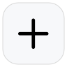
plusAdd新建plus.circle.fillAdd Circle强调新建
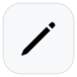
pencilEdit编辑trashDelete删除
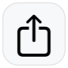
square.and.arrow.upShare分享checkmark.circleConfirm确认与完成
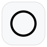
circleEmpty未完成checkmark.circle.fillDone已完成
exclamationmark.circleWarning提醒与异常
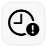
clock.badge.exclamationmarkDeadline截止与超时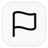
flagFlag优先级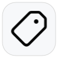
tagTag标签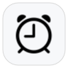
alarmAlarm提醒bellBell通知
bell.badgeReminder提醒事项
text.bubbleComment消息与备注
text.bubble.fillComment Fill强调消息
quote.bubbleQuote引用
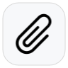
paperclipAttachment附件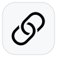
linkLink链接person.crop.circleProfile用户与身份
play.circlePlay播放
pause.circlePause暂停
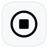
stop.circleStop停止timerTimer计时器
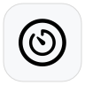
timer.circleTimer Circle专注计时waveformWaveform音频与动态
App Icon 生产规格
App Icon 这部分 Apple 给的是很具体的生产规则，包括图层、形状、平台尺寸和可选外观。它比单纯“应用图标规范”更接近真实交付标准。
| 平台 | 布局尺寸 | 系统最终形状 | 图层 / 外观要求 |
|---|---|---|---|
| iOS / iPadOS / macOS | 1024 × 1024 px | 系统裁成圆角方形 | Layered；支持 default、dark、clear、tinted 等外观变体。 |
| tvOS | 800 × 480 px | 系统裁成圆角横向矩形 | 2 到 5 层的 parallax 图标；焦点态会裁边，需保留 safe zone。 |
| visionOS | 1024 × 1024 px | 系统裁成圆形 | Layered 3D；背景和上层之间会通过阴影与高光增强立体感。 |
| watchOS | 1088 × 1088 px | 系统裁成圆形 | Layered；避免纯黑背景，以免和显示背景混在一起。 |
这些尺寸和形状是 Apple 官方明确给出的生产规格，可直接写进品牌资产或应用发布规范里。
App Icon 设计约束
这一层更像“设计制作红线”。虽然不是 token，但它们对后续产出是否像 Apple 平台原生体验影响很大。
| 约束项 | Apple 公开内容 | 我们规范里应怎么写 |
|---|---|---|
| 图层输入形状 | 不要预先裁圆角或做遮罩，提供平方或矩形图层，让系统自行 masking。 | 导出规范明确禁止手工裁成最终轮廓，否则会破坏系统高光和边缘品质。 |
| 前景边缘 | 前景图层应保持清晰边缘，避免柔边和羽化。 | App icon 的前景对象禁止使用模糊边缘作为主体轮廓。 |
| 背景设计 | 背景应突出前景，可优先使用纯色或从上到下的渐变；若导入背景图，应 full-bleed 且不透明。 | 背景层优先用简洁渐变或纯色，避免复杂纹理把主体吃掉。 |
| 文本使用 | 只有在品牌或体验必须时才放文字，且避免“Play”“New”这类说明性词汇。 | 应用图标默认不放文字；如确需字母，仅允许品牌识别级最小文本。 |
| 避免照片与 UI 截图 | 照片细节过多，不适合多外观与分层；不要复制标准 UI 组件或使用应用截图。 | 品牌资产规范里应明确：图标主体必须是图形化抽象，不接受截图式方案。 |
| 系统处理视觉效果 | 高光、阴影、模糊、斜角等应交给系统处理，不要在源图层里提前做死。 | 导出层保持尽量干净，把立体感交给平台，不靠静态特效堆砌。 |
`Icons` 这一章现在已经不只是“去哪看图标”，而是把 Apple 可直接拿到的图标规则拆成了三类前端可复用内容：
`interface icon 使用规则`、`SF Symbols 系统语言`、`App icon 生产规格`。后续如果你要继续补，我们更适合补的是“我们自己的业务图标尺寸体系”和“设计稿导出命名规范”，而不是再回去找 Apple 外链。
官方内容采集卡片
每一张卡片都对应一个以后可复用的设计规范章节。你可以先看苹果给了多少，再决定哪些模块要补第三方体系。
Foundations
可直接采集苹果在 HIG 首页和 macOS 设计入口里给了非常明确的平台基础原则，这部分适合直接提炼成我们自己规范的“设计原则”章节。
可采集内容
- Hierarchy、Harmony、Consistency 三个总原则。
- macOS 的大屏、多窗口、键盘和高精度输入特性。
- 支持菜单栏、工具栏、窗口自定义、快捷键的设计预期。
官方链接
Human Interface Guidelines
苹果设计总入口，适合作为总纲。
Designing for macOS
对桌面应用最有价值的入口，包含平台特征和最佳实践。
Color
部分可采集苹果给的是“如何用颜色”的规范，不是完整的设计 token 表。它适合指导语义层，不适合直接作为全套原子色板。
可采集内容
- 优先使用系统色，使界面自动适配外观、vibrancy 和辅助功能设置。
- 颜色应服务于沟通、状态反馈、品牌识别和信息层次。
- 避免同色异义，也避免只靠颜色传递信息。
缺失内容
- 没有一张完整公开表列出背景、文字、描边、填充的全部 token 数值。
- 缺少像 Arco 那样可直接导入工程的 palette 系统。
官方链接
Color
颜色原则、系统色思路和使用建议。
Typography
部分可采集苹果对字体资源和平台文本样式公开得比颜色更完整。能拿到 iPhone / iPadOS 的 Dynamic Type 表、macOS 的 built-in text styles、tracking 和系统字体 API，但拿不到一整套跨组件 token。
可采集内容
- SF Pro 是系统 UI 字体，SF Mono 和 New York 也有官方资源。
- Typography 页面给了 iPhone / iPadOS Dynamic Type 与 macOS built-in text styles 官方表。
- Apple 同时公开了 tracking values 和 UIKit / AppKit / SwiftUI 字体接口。
缺失内容
- 没有一个按组件和业务场景拆好的 token 表可直接复用到产品。
- 没有把按钮、表格、导航栏、Inspector 这些组件文本自动整理成产品规范。
官方链接
Typography
平台排版建议和部分 tracking 数据。
Fonts
SF Pro、SF Mono、New York 等字体资源下载入口。
Apple Design Resources
设计资源总入口，偏资源下载，不是纯文字规范。
Materials / Glass
部分可采集苹果公开讲了材质层次、vibrancy、背景混合模式和滚动边缘效果，这对我们定义“玻璃质感章节”很有用。但它仍不是一份可抄参数表。
可采集内容
- macOS 提供多种标准 materials，并建议按语义用途使用。
- 可参考 vibrancy 与 NSVisualEffectView 的 blending mode。
- Scroll edge effect 在 iOS、iPadOS、macOS 中已成为控制区和内容区过渡的重要语言。
缺失内容
- 没有统一 blur 值、透明度值、边框 alpha 或阴影参数表。
- 没有“Apple 玻璃 token”可直接拿来做设计系统。
官方链接
Materials
材质用途、平台差异和 vibrancy 指导。
Scroll views
包含 scroll edge effect 对 macOS 和 iPadOS 的描述。
NSVisualEffectView
开发实现侧入口，帮助理解材质和玻璃语义的落地方式。
Layout
可直接采集布局和信息层次是苹果公开资料里最完整的一块之一。虽然它不直接给 spacing token，但原则足够明确，适合转成我们自己的布局规范。
可采集内容
- 阅读顺序、视觉层次、对齐、渐进披露。
- safe area、layout guides、适配多窗口与不同设备环境。
- macOS 特别提醒：避免把关键控件放在窗口底部，避免内容进入摄像头区域。
缺失内容
- 缺少统一 spacing scale，例如 4/8/12/16 的系统化建议。
官方链接
Layout
布局原则、safe area 与平台适配总页。
Icons
可直接采集图标部分苹果公开得很充分，尤其适合建立“图标系统来源与规则”章节。这里最大的价值不是 token，而是图标语言的边界和资源来源。
可采集内容
- App icons 的形状、遮罩、平台差异、色彩空间和尺寸规格。
- Interface icons 与 SF Symbols 的使用原则。
- 图标应表达单一概念，支持系统着色与平台一致性。
官方链接
Component Patterns
部分可采集苹果的组件页是“分散的独立说明”，而不是单一组件系统文档。对我们最有价值的是工具栏、按钮、搜索栏、滚动视图、菜单这几类页面。
可采集内容
- Toolbar 的分区原则，leading / center / trailing 的布局逻辑。
- Search field 的位置策略，尤其是 macOS 与 iPadOS 的侧边栏/顶部放置建议。
- Buttons、Menus、Scroll views 的交互预期和可用性原则。
缺失内容
- 没有统一的控件尺寸、间距、圆角、状态色配置表。
- 很多组件需要 JavaScript 页面，文本抓取并不总是完整。
官方链接
Toolbars
工具栏区域分组和操作优先级。
Search fields
搜索框放置策略，适合参考你的侧边栏/全局搜索设计。
Buttons
按钮风格、角色和内容组合原则。
Menus
菜单行为和组织方式。
Scroll views
滚动区行为和 scroll edge effect。
Accessibility
可直接采集无障碍不是 token 层，但它必须成为设计规范中的强约束。苹果在这部分给出了很扎实的原则，适合作为规范中的“全局要求”章节。
可采集内容
- 界面必须直观、可感知、可适应。
- 不要只靠单一感官通道传递信息。
- 应考虑系统辅助功能与用户个性化设置。
官方链接
Accessibility
适合作为规范里的全局要求。
明确缺失的 Apple 规范内容
这部分是后面最需要你补外部参考的地方。也就是说，不是我没找到，而是苹果公开资料本身就没有给出完整可复用结果。
| 缺失模块 | 当前状态 | 为什么缺 | 后续建议补法 |
|---|---|---|---|
| 完整原子色板 | 缺失 | 苹果更强调系统色和语义色，不公开一整套面向设计系统的 palette 表。 | 后续可用你指定的第三方设计系统或我们自建 palette 来补。 |
| 统一字号 token 表 | 缺失 | 苹果公开的是字体资源和排版原则，不是跨组件 token 清单。 | 后续从 Apple 字体倾向出发，自建标题、正文、标签等级。 |
| Spacing 系统 | 缺失 | 苹果讲布局原则，不给 4/8/12/16 这种工程化 spacing scale。 | 需要我们自己定义一套平台友好的 spacing token。 |
| Radius / Shadow / Layer token | 缺失 | 苹果偏向最终效果和系统组件，不公开完整视觉参数表。 | 必须自建，后续可参考其他设计系统做结构化。 |
| 玻璃参数 token | 缺失 | 苹果公开材质原则和 API 语义，不公开 blur、opacity、stroke 的统一数值体系。 | 先保留 Apple 语义，再由我们根据产品风格补成参数化 token。 |
判断标准：只有当苹果公开页面能稳定提供明确结构、语义范围和足够多的可转译信息时，我才标记为“可直接采集”。如果只提供原则不给数值，我统一记为“部分可采集”。
下一步建议
现在这个网页已经把苹果能拿到的设计规范底稿整理好了。接下来最合理的动作不是继续硬找 Apple token，而是补那些苹果明显缺失但我们必须有的体系。
- 先把这页作为 `Apple 基线文档` 固定下来。
- 你再给我补第三方来源时，我只填补缺失章节，不重做结构。
- 优先补 Color palette、Typography scale、Spacing、Radius、Shadow、Layer、Motion。
- 等这些补完后，再生成真正可复用的 `Design Token Spec v1`。